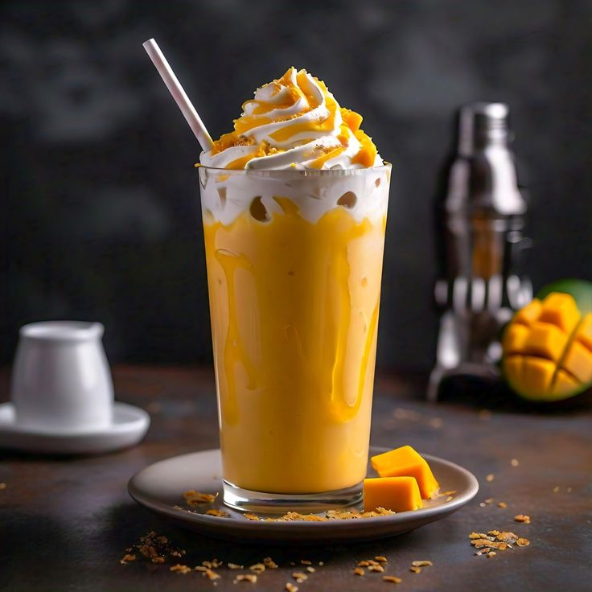

Get ready to blend up a taste of sunshine with our incredible mango milkshake recipe! It's the perfect treat for any time of day, offering a burst of tropical flavor that's bothrefreshing and super delicious.

Why Mango Milkshakes Are the Best
Mangoes are full of wonderful goodness, and turning them into a milkshake is a fantastic way to enjoy them. It's like a little vacation in a glass! Everyone loves a good mango milkshake!
What You'll Need to Make It
2 medium-sized ripe mangoes, peeled, pitted, and diced
1.5 cups of cold milk (you can use regular, almond, or oat milk!)
3 tablespoons of sugar or honey (add more or less to your liking)
A tiny pinch of saffron strands (optional, for a lovely aroma)
A few ice cubes for extra chill
How to Create Your Delicious Drink
First, make sure your mangoes are nice and ripe for the best flavor.
Put the diced mangoes, cold milk, sugar (or honey), and saffron (if using) into your blender.
Blend until the mixture is completely smooth and creamy. No lumps allowed!
Add a few ice cubes and blend for another 10-15 seconds until it's super cold and frothy.
Pour into your favorite glass and enjoy your homemade tropical delight!
We hope you love your mango milkshake! It's truly a special treat.